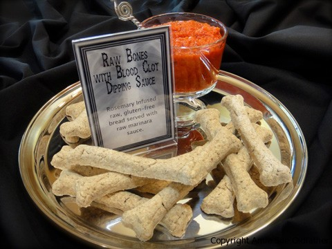
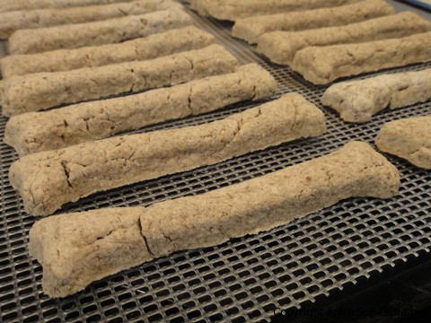

Rosemary Bread “Bones” Halloween

~ raw, vegan, gluten-free ~
Right now, I am preparing and creating recipes for our up-and-coming Halloween Party. And I decided to serve raw bones! Haha Sorry, I couldn’t pass that up, it fit so perfectly. I try to make at least 80% of my dishes raw for our guests. They always love them and rarely know that they are raw and healthy, so why not!? :)
I wanted to make a dish that resembled “bones, breadsticks” and I must say that I think I pulled it off! If their appearance turns you off, just close your eyes and think breadsticks!
They taste amazing dipped into a Raw Cherry Tomato Marinara Sauce. I used a Wilton’s Nonstick Bone Mold that is really meant for baking for this project. I found mine at my local Michael’s Craft Store. I can’t find the exact mold I used anymore but here’s an alternative (here). It took me several attempts to figure out the best way to get my raw bone dough out of the mold! I pressed the bread into the mold and flipped it over to see if it would happily release NOPE! I wiped the mold with a thin coating of coconut oil and flipped it over to see if it would happily release NOPE! I wiped the mold with a thin coating of coconut oil, placed it in the freezer to chill, hoping it would just pop out…NOPE! I begged I pleaded, I got down on my knees…NOPE! Finally! I figured it out. I took some plastic wrap and pressed it into the mold, then pressed the dough it, then I flipped the tray over and out came the “bones”! Yea! I may be slow in figuring things out from time to time, but by golly, I gotter’ dun!
Ingredients:
- 2 cups almond pulp
- 1 cup oat flour (see below)
- 1/2 cup Irish moss paste
- 1/4 cup date paste
- 1/4 cup flax meal (see below)
- 3 Tbsp raw coconut flour
- 1 Tbsp lemon juice
- 3 Tbsp fresh ground rosemary
- 1 tsp sea salt
Preparation:
- Making oat flour: first make your oat flour by putting raw, gluten-free oats in your food processor and processing until it reaches a fine flour consistency.
- Add flax meal (made by grinding flax seeds in a coffee grinder or Bullet), coconut flour, rosemary, and salt. Pulse till mixed. Put batter into a large bowl.
- Add almond pulp, Irish moss, date paste, and lemon juice. Blend till everything is well incorporated. I use my hands. Depending on how moist your almond pulp is, you may need to add water so the dough sticks together nicely. If you do, add one Tbsp at a time.
- Shape into the desired size.
- Dehydrate at 115 degrees (F) for about 8 hours. Check-in on them around 4-6 hours. You don’t want to dry them too much or they will be rough on the palate.
- Store in a sealed container in the fridge to extend their shelf life.

© AmieSue.com